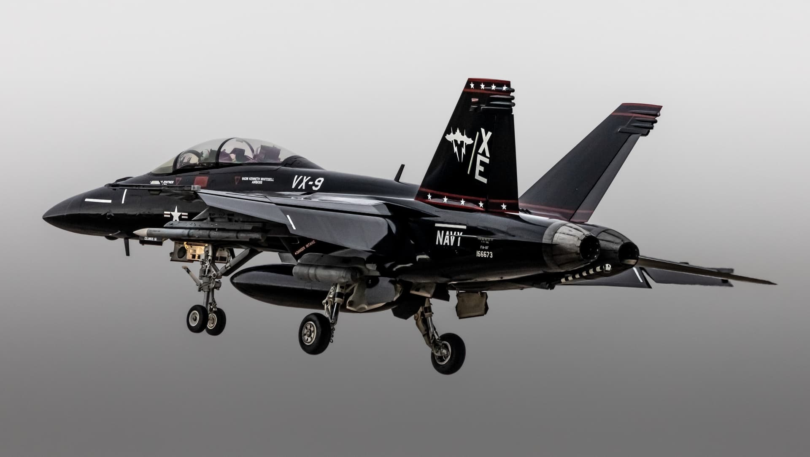
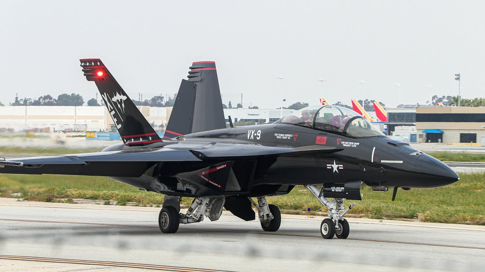

F/A-18 «Хорнет» — это многоцелевой палубный истребитель-штурмовик, настоящий «швейцарский нож» авианосной авиации, способный одинаково эффективно перехватывать воздушные цели и наносить высокоточные удары по земле в любых погодных условиях. Под его «капотом» (в хвостовой части) скрываются два мощных двухконтурных турбореактивных двигателя General Electric F404 (или F414 у версии Super Hornet), которые обеспечивают суммарную тягу до 20 тонн на форсаже, позволяя машине развивать скорость около 1,8 Маха и сохранять исключительную маневренность на малых скоростях. Арсенал этого хищника впечатляет: от встроенной скорострельной 20-мм пушки M61 Vulcan в носовой части до девяти (или одиннадцати) узлов подвески, на которых размещаются ракеты «воздух-воздух» AIM-9 Sidewinder и AIM-120 AMRAAM, противокорабельные ракеты Harpoon и корректируемые бомбы JDAM, превращая самолет в универсальную угрозу для любого типа противника.